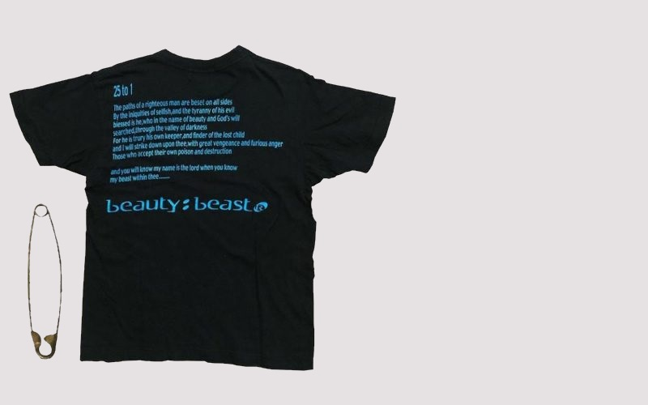

Weekly Competitions Weekly outfit competition - submit your outfits here Posted by Admin
Welcome everyone to the first weekly competition being held on the drobe website!Comment your entries below this post, and for rules please see the staff picks section.Best of luck everyone!

History A brief history - beauty:beast Posted by Admin
This Japanese fashion brand was founded in 1990 by the designer and master of the industry Takao Yamashita. The first collection was presented in 1991 along with the rise of the urban culture in the famous district of Harajuku, which catapulted it to its stardom; Currently, it is considered as a cult brand in the Japanese country. Like his peers, Yamashita is inspired by the punk culture of the United States. However, it moves away from the “careless” style of Takahashi (Undercover) and Miyashita (Number Nine); and approaches other topics such as religion, fairytales and iconography. Yamashita designs t-shirts, blouses, parkas and accessories that are really curious, an example, a giant safety pin from AW 98-99; always with a strong symbolic charge. He collaborates with brands such as Undercover or 20471120, which are part of the 2000 Japanese wardrobe.
Since last year we have been able to see a growing wave of archive buyers, who devour Grailed in order to find those Raf or Junya coveted garments; However, these genuine brands tend to be forgotten because of the most superficial ones.
There is hardly any information beyond the magazines of that time or archives of the underground culture in Japan; but here we bring a brief sample with some designs from the brand.!